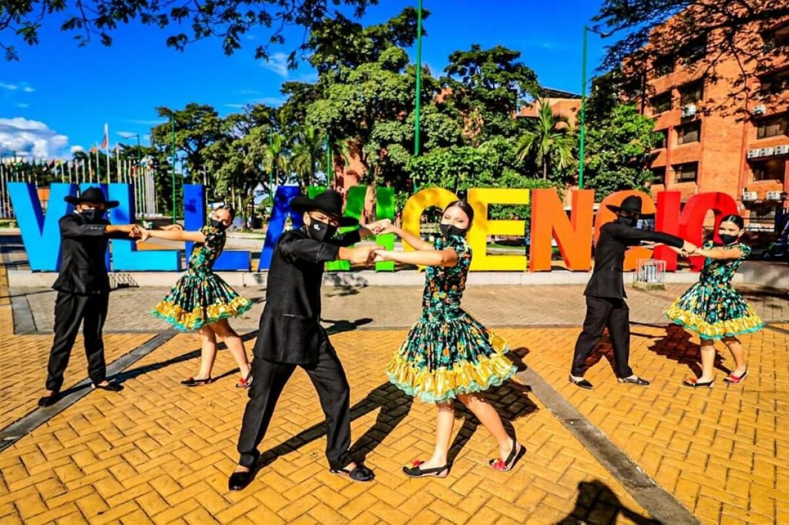
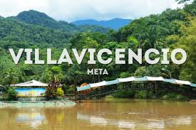
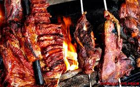

La cultura llanera: identidad de Villavicencio
Villavicencio es el alma del llano colombiano. La música llanera, el joropo y los cantos de vaquería son parte esencial de su identidad. Cada año, se celebran eventos como el Torneo Internacional del Joropo, que atrae a turistas de todo el mundo.

El folclor, la vestimenta tradicional y la hospitalidad llanera hacen de Villavicencio una ciudad única, llena de vida y tradición.
5 lugares que debes visitar en Villavicencio
Desde el imponente Mirador La Piedra del Amor hasta el Parque Las Malocas, Villavicencio ofrece paisajes increíbles y actividades para toda la familia.

Otros imperdibles:
- Bioparque Los Ocarros
- Puente colgante del río Guatiquía
- Catedral Nuestra Señora del Carmen
¡Ven y enamórate del Llano!
Sabores del llano: lo mejor de la cocina villavicense
Villavicencio es tierra de sabor. El tradicional mamona (carne a la llanera), el pisillo de carne y el ajiaco llanero son algunos de los platos más representativos.

No olvides probar:
- Chicha de arroz
- Arepas de maíz pelado
- Dulces de plátano y cuajada
¡La comida también cuenta historias!